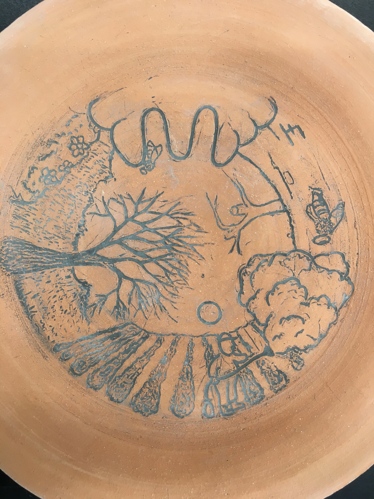
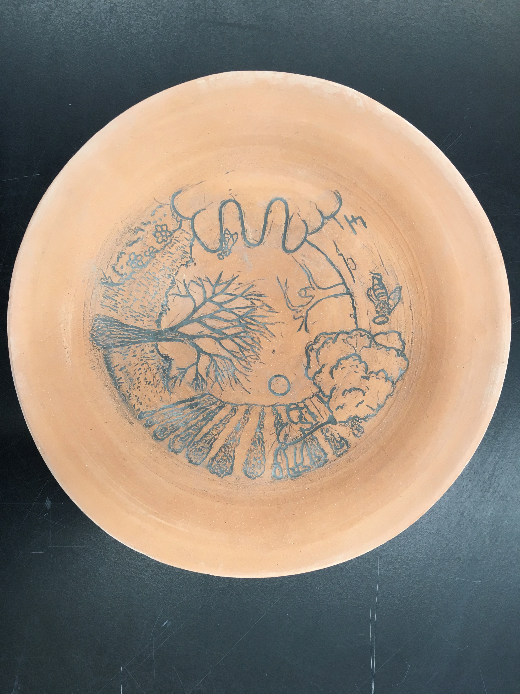
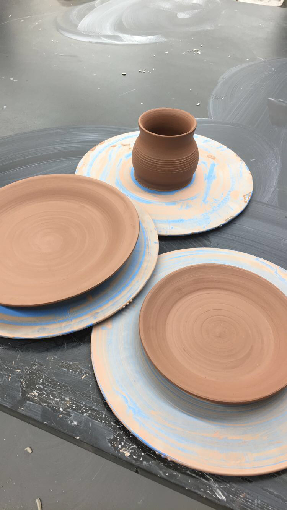

Bee decline has been a world issue for decades. It exists because of human activity, mainly due to agricultural practices. Bees pollinate the majority of the food we consume every day, and their extinction would mean ours too. As a part of my case study project, I made an illustration of the bee decline process that I carved on a ceramic plate. I chose a plate because that is where we put our food, and bees are the reason we have it.